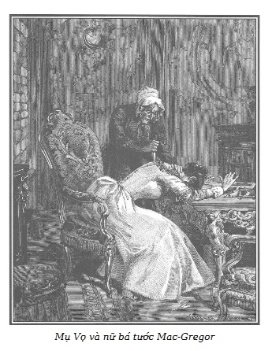

Nửa rắn nửa mèo…
WOLFGANG, quyển II
Thomas Seyton, anh của nữ Bá tước Sarah Mac-Gregor, đang đi dạo trên một đại lộ bên cạnh đài thiên văn thì mụ Vọ đến.
Mụ già ghê tởm, đội một chiếc mũ trắng, choàng một cái áo rộng màu đỏ. Nằm dưới đáy chiếc giỏ mụ xách trên tay là con dao găm tròn như một ngòi bút rất sắc. Người ta có thể thấy được mũi dao giết người ấy chính là của lão Thầy Đồ.
Thomas Seyton không biết là mụ Vọ có vũ khí.
– Ba giờ đã điểm ở Luxembourg, – mụ Vọ nói, – tôi đến rất đúng lúc… tôi mong…
– Lại đây! – Thomas Seyton bảo mụ.
Và, đi trước mụ, ông ta vượt qua vài khu đất hoang, vào một khu phố nhỏ, vắng, gần phố Cassini. Dừng lại giữa lối đi bị chắn ngang bằng một cửa xoay, ông ta mở một cửa nhỏ, ra hiệu cho mụ Vọ đi theo trong một lối đi dày cây xanh. Đi được vài bước, ông ta nói với mụ:
– Hãy chờ ở đây!
Và ông ta biến mất.
– Miễn là ông ta không bắt mình sốt ruột chờ lâu. – Mụ Vọ nói. – Mình sẽ phải đến nhà Cánh Tay Đỏ vào năm giờ với bọn Martial để “thịt” con mụ mối lái.
Mũi dao găm lúc này đã tòi ra ngoài giỏ. Mụ rút con dao ra tra chiếc cán gỗ vào rồi lại đặt kín đáo vào giỏ.
– Đó là đồ nghề của đại ca! – Mụ nói. – Không biết lão ta có đòi lại để giết mấy con chuột đến đùa với lão trong hầm không? Những con vật đáng thương! Thường khi chúng chỉ có lão già mù để tiêu khiển. Tao cũng không muốn lão làm gì hại đến lũ chuột con, nên đã giữ lại con dao găm của lão. Vả lại, lát nữa tao sẽ cần đến nó để khử con mụ mối lái. Ba mươi nghìn franc kim cương. Mỗi đứa một phần lớn đấy! Ngày hôm nay sẽ rất tốt đẹp, không như hôm trước. Tên chưởng khế kẻ cướp mà tao định tống tiền. Tao đã hoài công dọa hắn. Nếu hắn không cho tao tiền, tao sẽ tố giác chính bà giúp việc của hắn đã trao lại Sơn Ca cho tao qua Tournemine, khi con bé còn rất nhỏ. Hắn cũng chẳng sợ. Hắn gọi tao là mụ già dối trá và đuổi tao ra cửa… Được, được. Tao sẽ viết một bức thư nặc danh cho những người trong trang trại biết rằng xưa kia chính lão chưởng khế đã bảo đem con Lỏi Con bỏ đi. Có lẽ họ biết gia đình con bé, nên khi con bé rời khỏi Saint-Lazare sẽ có chuyện với tên vô lại Jacques Ferrand. Nhưng họ đã tới đây… Chính là cái bà bé nhỏ, xanh xao đó đã cải trang thành đàn ông ở Quán Liều với cái ông to lớn ban nãy. Chính hai người này đã bị tao và đại ca trấn lột sau đống gạch, gần nhà thờ Đức Bà. – Mụ Vọ nói khi thấy Sarah xuất hiện ở đầu phố. – Chắc có thể làm ăn được vài cú nữa. Có thể vì quyền lợi của bà bé nhỏ kia mà bọn tao đã bắt con Sơn Ca ở trang trại. Nếu bà ta chi đậm, chuyện đó càng hay cho tao.
Khi đến gần mụ Vọ, người mà bà ta gặp lại lần đầu sau màn kịch diễn ra ở Quán Liều, Sarah lộ vẻ khinh bỉ, cái khinh bỉ của một người thuộc giai cấp trên mỗi khi bắt buộc phải tiếp xúc với những kẻ khốn nạn, mà họ thường sử dụng như một công cụ hoặc một kẻ a tòng.
Thomas Seyton đến lúc này vẫn tích cực phục vụ những mưu đồ tội ác của em gái, mặc dù ông ta cho là những mưu đồ ấy gần như vô hiệu, đã từ chối không tiếp tục cái vai trò khốn nạn đó nữa, tuy nhiên vẫn bố trí lần đầu cũng như lần cuối cùng cuộc gặp giữa cô em và mụ Vọ, nhưng không tham dự vào những mưu đồ mới này.
Không thể kéo Rodolphe trở lại với mình bằng cách phá hủy những liên hệ hoặc những tình cảm thân thiết đối với ông, bà Bá tước mong muốn, như ta đã nói, làm cho ông bị lừa trong một vụ gian dối đồi bại, mà sự thành công sẽ bảo đảm giấc mơ của người đàn bà ngoan cố, nhiều khát vọng và độc ác này. Chỉ cần thuyết phục Rodolphe tin rằng đứa con gái của ông và Sarah không phải đã chết, mà đã được thay thế bằng một cô gái mồ côi khác. Chúng ta biết rằng Jacques Ferrand đã dứt khoát từ chối tham dự âm mưu đó, đã quyết định thủ tiêu Marie, mặc dù những lời đe dọa của Sarah, do mụ Vọ phát hiện, hơn là những lời yêu cầu cứng rắn của bà Bá tước. Nhưng bà này không từ bỏ ý định vì bà ta tin là có thể mua chuộc hoặc đe dọa lão chưởng khế, khi bà ta bảo đảm kiếm được một cô bé thay thế cho cô bé mà bà ta định đánh tráo.
Sau một lúc im lặng, Sarah nói với mụ Vọ:
– Mụ thật khôn ngoan, kín đáo và quả cảm!
– Tinh ma như một con khỉ, ráo riết như con chó ngao, câm như thóc. Mụ Vọ là thế, như ma quỷ đã tạo nên nó để phục vụ bà, nếu nó có thể làm được, và nó đã làm được. – Mụ Vọ trả lời một cách hoan hỉ. – Tôi tin tưởng là chúng tôi đã khôn khéo chộp được con bé nhà quê ấy và hiện nay nó đã bị nhốt ở Saint-Lazare hai tháng.
– Không phải chuyện con bé ấy mà là chuyện khác.
– Thưa, tùy ý bà. Miễn là có tiền cho công việc bà sắp giao cho chúng tôi. Chúng ta sẽ như hai ngón tay trong một bàn tay…
Sarah không nén nổi sự tởm lợm.
– Mụ hẳn phải biết nhiều về những kẻ thường dân, những kẻ khốn khổ…
– Những kẻ đó nhiều hơn là những triệu phú. Ta có thể tự do lựa chọn. Lạy Chúa, người nghèo ở Paris nhiều vô khối!
– Cần tìm cho tôi cô gái mồ côi cha mẹ từ nhỏ, nghèo khổ, chú ý là nó phải có một khuôn mặt dễ thương, một tính cách hiền dịu và chưa quá mười bảy tuổi.
Mụ Vọ ngạc nhiên nhìn Sarah.
– Tìm một con bé như thế thì có khó gì. Có bao nhiêu đứa trẻ vô thừa nhận. – Sarah nói.
– À, nhưng thưa bà, bà đã quên con bé Sơn Ca? Đó là điều bà quan tâm…
– Con bé Sơn Ca là đứa nào vậy?
– Đứa con gái mà chúng tôi vừa bắt cóc ở trang trại Bouqueval.
– Tôi đã nói là không phải chuyện về con bé ấy.
– Nhưng thưa bà, hãy lắng nghe tôi và sẽ thưởng cho tôi về những lời bổ ích của tôi. Thưa bà, bà cần một con bé mồ côi, hiền dịu như cừu non, đẹp như tiên, và chưa đến mười bảy tuổi phải không ạ?
– Đúng thế!
– Thế thì bà hãy nhận con bé Sơn Ca khi nó ra khỏi Saint-Lazare. Đó là phần thưởng của bà, giống như người ta đã làm sẵn cho bà, bởi vì con bé ấy khoảng sáu tuổi khi lão khốn kiếp Jacques Ferrand (từ bấy đến nay đã mười năm) giao cho tôi với một nghìn franc để thủ tiêu. Và cũng chính Tournemine hiện ở nhà tù khổ sai Rochefort dẫn nó đến chỗ tôi, nói rằng đây là đứa bé mà người ta muốn loại bỏ, hoặc coi như đã chết.
– Mụ nói sao? Jacques Ferrand à? – Sarah kêu lên thất thanh, đến nỗi mụ Vọ kinh hoàng lùi lại. – Lão chưởng khế đã giao con bé và… – Xúc động quá mạnh mẽ, bà ta giơ hai tay về phía mụ Vọ, run bắn. Sự bất ngờ, niềm vui làm sắc diện bà ta thay đổi hẳn.
– Nhưng tôi không hiểu vì sao bà lại xúc động như thế, thưa bà. Thật đơn giản! Cách đây mười năm, Tournemine, một người quen lâu ngày nói với tôi. “Mày có muốn nhận một đứa bé gái mà người ta muốn thủ tiêu không? Nó chết hay sống, không cần. Mày sẽ có một nghìn franc. Mày muốn làm gì nó thì làm.”
– Đã mười năm! – Sarah kêu lên.
– Vâng, mười năm.
– Một bé gái tóc hoe?
– Một bé gái tóc hoe.
– Với cặp mắt xanh?
– Cặp mắt xanh như hoa thanh cúc.
– Và chính con bé đó ở trang trại…
– Chúng tôi đã bắt nó đưa đến Saint-Lazare. Phải nói là tôi không ngờ tìm được nó ở nông thôn…
– Ôi, lạy Chúa! Lạy Chúa! – Sarah kêu lên, ngã khuỵu xuống, giơ hai tay lên trời. – Ý định của Người thật là huyền diệu. Con quỳ gối trước Thượng đế. Ôi, nếu có thể có một hạnh phúc tương tự, nhưng không… Tôi chưa thể tin tưởng như thế được… Thật là đẹp đẽ… Không…
Rồi bà ta vụt đứng dậy, nói với mụ Vọ đang ngạc nhiên nhìn bà ta.
– Lại đây!
Sarah bước những bước vội vã đến trước mụ già. Đến đầu phố, bà ta bước lên mấy bậc thềm dẫn đến một phòng làm việc bày biện trang trọng. Vào lúc mụ Vọ định vào, Sarah ra hiệu cho mụ dừng lại.
Rồi bà Bá tước kéo mạnh chuông.
Một người đầy tớ xuất hiện.
– Tôi sẽ ở đây một mình, không ai được vào, nghe rõ chứ? Tuyệt đối không một ai!
Người đầy tớ đi ra.
Để cẩn thận hơn, Sarah chốt cửa lại.
Mụ Vọ nghe rõ bà Bá tước căn dặn người đầy tớ, và thấy bà ta chốt cửa. Bà Bá tước quay lại nói với mụ:
– Vào nhanh và đóng cửa lại!
Mụ Vọ bước vào.
Mở một ngăn kéo tủ, Sarah lấy ra một chiếc hộp gỗ mun, đem đến bên bàn giấy ở giữa phòng và ra hiệu cho mụ Vọ đến gần.
Chiếc hộp đựng nhiều đồ trang sức quý, xếp chồng chéo lên nhau. Sarah vội vã lục dưới đáy hộp lấy ra nhiều vòng, xuyến, mũ miện lấp lánh những hồng ngọc, ngọc lục bảo và kim cương.
Mụ Vọ quáng cả mắt. Mụ có vũ khí, lại ở một mình trong phòng với bà Bá tước, việc chạy trốn khá dễ dàng, bảo đảm… Một ý tưởng độc ác thoáng qua đầu con quỷ này!
Nhưng muốn thực hiện ý đồ đó, mụ cần phải rút dao ra khỏi vỏ, và lại gần Sarah mà không làm cho bà ta nghi ngờ.
Với cái nhìn xảo trá của con mèo rừng, mụ Vọ lợi dụng lúc bà Bá tước đang chăm chú vào chuỗi ngọc, lén lút đi vòng quanh chiếc bàn ngăn cách mụ với nạn nhân.
Vừa bắt đầu cuộc xê dịch xảo quyệt đó, mụ Vọ bỗng phải ngừng lại vì đúng lúc này, Sarah rút từ đáy hộp ra một đồ trang sức có gắn ảnh rồi chồm người lên bàn, giơ cho mụ Vọ xem, tay run rẩy.
– Nhìn bức chân dung này!
– Chính là Lỏi Con. – Mụ Vọ kêu lên vì thấy quá giống. – Đúng là con bé mà họ giao cho tôi. Tôi tưởng như trông thấy nó khi Tournemine dẫn nó đến giao cho tôi. Đúng là lọn tóc của nó mà tôi đã cắt ngay và đem bán được rất nhiều tiền.
– Mụ nhận ra chứ, đúng nó chứ? Ôi, tôi cầu xin mụ đừng lừa dối tôi… Đừng lừa dối tôi!
– Tôi đã thưa với bà, đúng là nó, không sai chút nào! – Vừa nói mụ Vọ vừa tìm cách đến gần Sarah hơn mà không bị để ý. – Đến giờ phút này nó vẫn giống tấm hình này. Nếu bà thấy nó, bà sẽ nhận ra ngay.
Sarah đã không thốt lên một tiếng kêu đau thương nào khi biết đứa con gái của mình đã phải sống đau khổ, bị bỏ rơi suốt mười năm qua.
Bà ta không hề có một chút hối hận khi nghĩ rằng chính bà ta đã giật con gái mình ra khỏi nơi trú ngụ yên tĩnh mà Rodolphe đã sắp xếp. Bà mẹ trái luân thường đó không hề hỏi mụ Vọ về cuộc sống đã qua của con gái mình!
Không, ở Sarah, từ lâu, lòng tham lam đã bóp nghẹt tình mẫu tử. Với bà ta, không phải nỗi vui mừng tìm lại được đứa con gái, mà là hy vọng chắc chắn cuối cùng sẽ thực hiện được giấc mộng kiêu hãnh của cuộc đời bà ta.
Rodolphe rất quan tâm đến cô bé khốn khổ đó, đã nhận nuôi cô bé mà không hề biết. Ông sẽ ra sao khi biết cô bé đó chính là con gái mình, tình thế sẽ ra sao khi ông biết đó là CON GÁI ÔNG!
Ông đã tự do… và bà Bá tước góa chồng.
Sarah đã thấy lấp lánh trước mắt mình chiếc mũ miện hoàng gia.
Mụ Vọ vẫn đi tới từng bước chậm chạp, cuối cùng đã tới được góc bàn và đặt con dao găm thẳng đứng trong giỏ, cán nằm ngay ở mép giỏ, vừa đúng tầm…
Mụ chỉ còn cách bà Bá tước vài bước chân.
– Mụ có biết viết không? – Bất thần bà Bá tước hỏi, lấy tay đẩy chiếc hộp và đồ trang sức ra một bên. Bà ta mở một tập giấy để gần lọ mực.
– Thưa bà, tôi không biết viết ạ! – Mụ Vọ lơ đễnh trả lời.
– Tôi sẽ viết theo lời mụ đọc. Hãy nói rõ hoàn cảnh con bé đó bị bỏ rơi.
Lúc này Sarah ngồi trên một chiếc ghế bành trước bàn giấy, cầm một cây bút và ra hiệu cho mụ Vọ lại gần.
Con mắt của mụ già ánh lên.
Cuối cùng mụ đã đứng ngay bên cạnh ghế bà Công tước.
Bà này cúi đầu xuống bàn chuẩn bị viết.
– Tôi sẽ đọc to và chậm, mụ sẽ chữa những chỗ chưa đúng. – Sarah nói.
– Thưa bà, vâng. – Vừa nói mụ vừa theo dõi sát mọi cử động của bà Bá tước và mụ luồn tay phải vào giỏ, để có thể cầm con dao mà không ai trông thấy.
Bà Bá tước bắt đầu viết:
“Tôi tuyên bố rằng…
Nhưng vừa ngừng lại và quay về phía mụ Vọ, lúc này đã rời cán dao, Sarah hỏi thêm:
– Đứa bé được giao cho mụ vào thời gian nào?
– Vào tháng Hai năm 1827.
– Ai giao? – Sarah hỏi, đầu quay về phía mụ Vọ.
– Do Pierre Tournemine, hiện đang ở nhà lao Rochefort. Chính bà Séraphin, người giúp việc cho lão chưởng khế đã giao con bé cho hắn ta.
Bà Bá tước quay lại tiếp tục viết và đọc to:
“Tôi khai rằng vào tháng Hai năm 1827, tên…
Mụ Vọ rút dao ra khỏi vỏ.
Mụ đã đứng lên chuẩn bị tư thế đâm vào giữa hai vai của nạn nhân. Sarah quay lại.
Để khỏi bị phát hiện, mụ Vọ tựa hẳn tay phải đang cầm dao vào thành chiếc ghế bành Sarah đang ngồi và ngả hẳn người về phía bà ta để trả lời câu hỏi.
– Tôi quên mất tên người đã giao đứa bé cho mụ. – Bà Bá tước nói.
– Thưa, là Pierre Tournemine. – Mụ Vọ đáp.
– Pierre Tournemine. – Sarah nhắc lại và tiếp tục viết:
“… hiện nay đang ở tại nhà lao Rochefort, đã giao lại cho tôi một đứa bé mà bà giúp việc của…”
Bà Bá tước không thể viết tiếp.

.Sau khi từ từ bỏ chiếc giỏ lăn dưới đất, với tất cả sự nhanh nhẹn và dữ tợn, tay trái nắm lấy gáy, nhấn đầu bà Bá tước xuống, bàn tay phải của mụ đâm một nhát giữa hai vai nạn nhân…
Hành động giết người ghê tởm đó diễn ra quá đột ngột, đến nỗi bà Bá tước không kịp kêu lên một tiếng hay một lời rên rỉ.
Vẫn ngồi trên ghế bành, bà ta gục xuống bàn, cây bút rời khỏi tay.
– Cũng giống như nhát dao mà Thầy Đồ đâm lão già nhỏ bé ở phố Roule. – Con quái vật nói. – Thêm một con mụ không thể nói được nữa… Thế là xong đời!
Và mụ vội vàng vơ tất cả các đồ đá quý cho vào trong giỏ, không nhận thấy là nạn nhân vẫn còn thở.
Việc giết người cướp của đã xong, mụ già hung dữ mở cửa kính chuồn nhanh ra phố, lẩn trong rặng cây xanh, và biến vào trong bãi đất hoang.
Đến gần Đài Thiên Văn, mụ nhảy lên một chiếc xe ngựa đến nhà Cánh Tay Đỏ ở Champs-Élysées, nơi mà mụ góa Martial, Nicolas, Quả Bầu và Cá Trê, như ta biết, đã hẹn với mụ để lấy cắp và giết người mối lái kim cương.